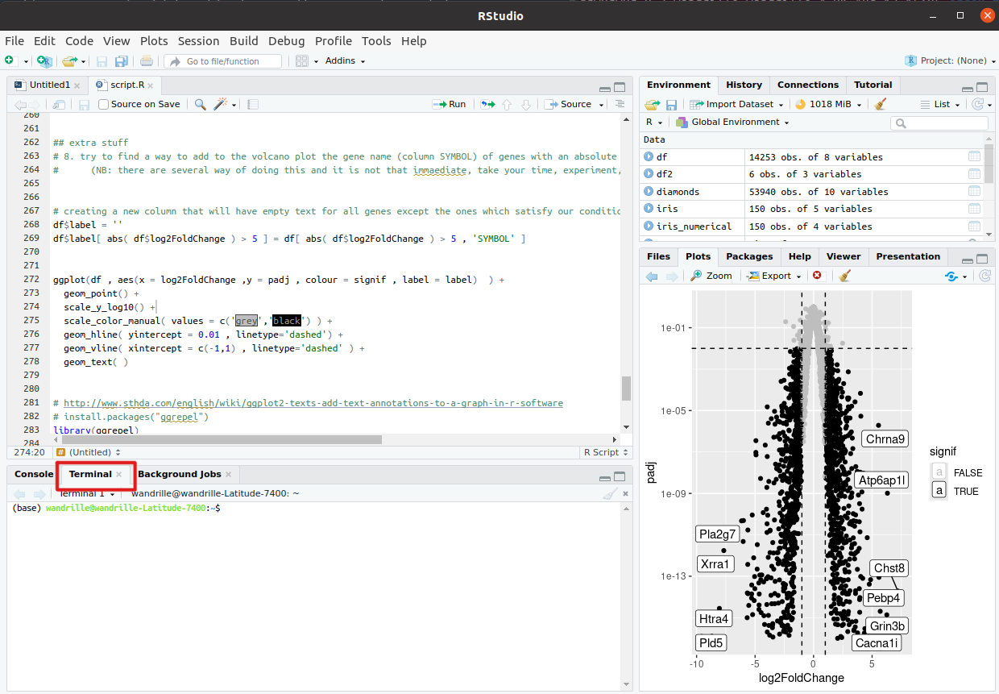
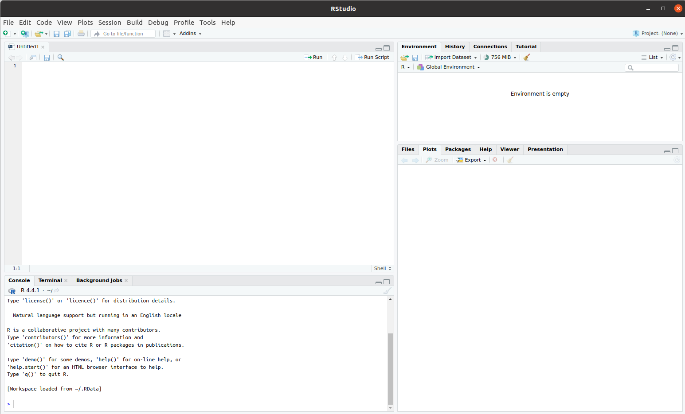
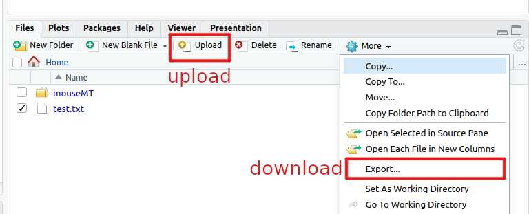
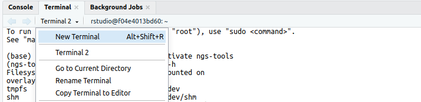

To conduct the practicals of this course, we will be using a dedicated distant server with enough computing capabilities to handle RNAseq data amd where all the necessary software has been installed.
This matches the reality of most NGS workflows, which cannot be completed in a reasonable time on a single laptop machine.
To interact with this server, you will have to connect and log in to it. We will do so through an Rstudio server, which, conveniently, let’s us start a UNIX terminal to launch bioinformatics tools, retrieve and send files to the server, and use R scripts to analyse our results.
This page will cover our first contact with the distant server.
You will learn to :
- connect to the server.
- use the command line to perform basic operations.
- exchange files between the server and your own machine.
Note
If you are doing this course on your own, then the distant server provided within the course will not be available. Feel free to ignore or adapt any of the following steps to your own situation.
Warning
Everyone is connected to the same server. There are a few guardrails in place that should prevent any one user from crashing the server or hogging all the resources, but no system is fully foolproof. Consequently, before you launch a serious job, always take the time to test it on a smaller dataset in order to estimate if the big job might be too big.
Connect to the server
Follow the teacher’s instructions to get the rstudio server address, as well as you login and password
Start a terminal on the server

Using command line on the cluster
Now that you are in the head node, it is time to get acquainted with your environment and to prepare the upcoming practicals. We will also use this as a short reminder about the UNIX command line.
Commands are issued using a shell command language. The one on our server is called bash. You can refer to this nice Linux Command Line Cheat Sheet (page 1 in particular) for reviewing common commands.
At any time, you can get the file system location (folder/directory) your terminal is currently in, by typing the “print working directory” command:
pwd
When you start a session on a distant computer, you are placed in your home directory. So the cluster should return something like:
/home/<login>
From then, we are going to do a little step-by-step practical to go through some of bash’s most useful commands for this course.
Creating a directory
practical
Use the command line to create a repository called mouseMT where you will put all materials relating to the analysis of the mouseMT dataset.
Answer
mkdir mouseMT
practical
Move your terminal’s connection to that directory.
Answer
cd mouseMT
The directory /data/ contains data and solutions for most practicals.
practical
List the content of the /data/ directory.
Answer
ls /data/
Note
You don’t need to move to that directory to list its contents!
practical
Copy the script 010_s_fastqc.sh from /data/Solutions/mouseMT into your current directory,
and then print the content of this script to the screen.
Answer
cp /data/Solutions/mouseMT/010_s_fastqc.sh .
more 010_s_fastqc.sh
#!/usr/bin/bash
# creating the output folder
mkdir -p 010_d_fastqc/
fastqc -o 010_d_fastqc /data/DATA/mouseMT/*.fastq
We’ll see what all this means soon.
Creating and editing a file
To edit files on the distant server, we will use the Rstudio file editor. It is primarily designed for R script but it works very well for other types of files.
Note
Alternatively, we could use command line editor nano. It is far from the most complete or efficient one, but it can be found on most servers, and is arguably among the easiest command-line file editor to start with.
To start editing a file named test.txt, in Rstudio go to File > New File > Text File, or use the shortcut Ctrl+Alt+Shift+N

Type in your favorite movie quote, and then save it with Ctrl+s, give it an appropriate name, like test.txt for example
You can check that your modifications were saved from the terminal by typing
more test.txt
Note
for the command above to work, your terminal needs to be in the same folder as the file. Take careful note of where you save your files, and where your terminal is running.
Exchanging files with the server
Whether you want to transfer some data to the server or retrieve the results of your latest computation, it is important to be able to exchange files with the distant server.
Fortunately, Rstudio provides an easy way to do this.

Note
Alternatively, there exists several alternatives, from using the command line tool scp to graphical tools such as fileZilla.
practical
Retrieve the file test.txt, which you created in the previous practicals, from the distant server to your local machine.
practical
Create a text file on your local computer (using wordpad on windows, Text Edit on Mac, or gedit on linux). Save that file, and then send it to the distant server.
Warning
For Windows users, if you edit files on your computer before sending them to the server, you will likely see strange character at the end of the file lines.
This is because Windows ends line with “\r\n” while Unix uses just “\n”. This can be solved using the dos2unix command line tool:
dos2unix <filename>
bash scripts
So far we have been executing bash commands in the interactive shell. This is the most common way of dealing with our data on the server for simple operations.
However, when you have to do some more complex tasks, such as what we will be doing with our RNA-seq data, you will want to use scripts. These are just normal text files which contain bash commands.
Scripts :
- keep a written trace of your analysis, so they enhance its reproducibility.
- make it easier to correct something in an analysis (you don’t have to retype the whole command, just change the part that is wrong).
- often necessary when we want to submit big computing jobs to the cluster.
Create a new text file named myScript.sh on the server (you can use nano or create it on your local machine and later transfer it to the server).
Then, type this into the file:
#!/usr/bin/bash
## this is a comment, here to document this script
## whatever is after # is not interpreted as code.
# the echo command prints whatever text follows to the screen:
echo "looking at the size of the elements of /data/"
sleep 15 # making the script wait for 15 seconds - this is just so we can see it later on.
# du : "disk usage", a command that returns the size of a folder structure.
du -h -d 2 /data/
The first line is not 100% necessary at this step, but it will be in the next part, so we might as well put it in now. It helps some software know that this file contains bash code.
Then to execute the script, navigate in a terminal open on the server to the place where the script is, and execute the following command:
sh myScript.sh
Warning
Be sure to execute the script from the folder that it is in. Otherwise you would have to specify in which folder to find the script using its path.
This should have printed some information about the size of /data/ subfolders to the screen.
Activate the conda environment containing bioinformatics software
As it stands, the terminal you are currently using does not have access to bioinformatics software:
fastqc --help
results in the error : Command 'fastqc' not found, ...
Indeed, bioinformatics tools are not installed by default on the server.
Here, we have prepared the bioinformatics software in a conda environment (conda environments provide a useful way to manage software stacks across plateform).
So, first we need to initialize conda:
conda init

Once this is done, you can notice that now you terminal line starts with (base). This is a sign that conda is activated and that you are currently using its default environment.
So finally we can activate the environment containing tools, which is called ngs-tools:
conda activate ngs-tools
Now when you run the following command you should see the fastqc help:
fastqc --help
ANNEX : HPC clusters
The following annex discuss HPC clusters, where you do not execute your compute-intensive job directly on the server you connect to, but rather to submit jobs to a scheduler which then allocate them compute resources on dedicated compute nodes.
Having to use such a cluster is quite common in bioinformatics given the size of most modern datasets.
Note
in this annex we only discuss the SLURM scheduler. Other schedulers use different command lines and a different linguo (although many concepts are similar).
Submitting jobs
Submitting a simple script
Jobs can be submitted to the compute cluster using bash scripts, with an optional little preamble which tells the cluster about your computing resource requirements, and a few additional options.
Each time a user submits a job to the cluster, SLURM checks how much resources they asked for, with respect to the amount available right now in the cluster and how much resources are allowed for that user.
If there are enough resources available, then it will launch the job on one or several of its worker nodes. If not, then it will wait for the required resources to become available, and then launch the job.
To start with, you can have a look at what is happening right now in the cluster with the command:
squeue
On the small course server, there should not be much (if anything), but on a normal cluster you would see something like:
JOBID PARTITION NAME USER STATE TIME TIME_LIMIT QOS NODELIST(REASON)
48175517 a100 cryocare user1 PENDING 0:00 6:00:00 gpu6hours (None)
48168955 a100 ecoli_pool2 user2 RUNNING 4:09:18 6:00:00 6hours sgi77
47806032 a100 GAN_final user3 RUNNING 4-04:10:20 13-20:00:00 projects sgi64
47975434 a100 GAN_256_8192 user3 RUNNING 1-18:21:39 7-00:00:00 1week sgi71
48174629 a100 x-35780_y20062 user4 RUNNING 13:36 7:00:00 gpu1day sgi74
The columns correspond to :
- JOBID : the job id, which is the number that SLURM uses to identify any job
- PARTITION : which part of the cluster is that job executing at
- NAME : the name of the job
- USER : which user submitted the job
- STATE : whether the job is currently
RUNNING,PENDING,COMPLETED,FAILED - TIME : how long has this job been running for
- TIME_LIMIT : how long will the job be allowed to run
- QOS : which queue of the cluster does the job belong to. Queues are a way to organize jobs in different categories of resource usage.
- NODELIST(REASON) : which worker node(s) is the job running on.
You can look up more info on squeue documentation.
Now, you will you will want to execute your myScript.sh script as a job on the cluster.
This can be done with the sbatch command.
The script can stay the same (for now), but there is an important aspect of sbatch we want to handle: the script will not be executing in our terminal directly, but on a worker node.
That means that there is no screen to print to. So, in order to still be able to view the output of the script, SLURM will write the printed output into a file which we will be able to read when the job is finished (with more or less).
By default, SLURM will name this file something like slurm-<jobid>.out, which is not very informative to us; so, instead of keeping the default, we will give our own output file name to sbatch with the option -o. For example, I will name it myOutput.o.
In the terminal, navigate to where you have you myScript.sh file on the distant server and type
sbatch -o myOutput.o myScript.sh
You should see an output like:
sbatch: Submitted batch job 41
Letting you know that your job has the jobid 41 (surely yours will be different).
Directly after this, quickly type:
squeue
If you were fast enough, then you will see your script PENDING or RUNNING.
If not, then that means that your script has finished running. You do not know yet if it succeeded or failed.
To check this, you need to have a look at the output file, myOutput.o in our case.
If everything worked, you will see the normal output of your script. Otherwis, you will see some error messages.
Specifying resources needed to SLURM
When submitting the previous job, we did not specify our resource requirements to SLURM, which means that SLURM assigned it the default:
- 1 hour
- 1 CPU
- 1 GB of RAM
Often, we will want something different from that, and so we will use options in order to specify what we need.
For example:
--time=00:30:00: time reserved for the job : 30min.--mem=2G: memory for the job: 2GB--cpus-per-task=4: 4 CPUs for the job
Your sbatch command line will quickly grow to be long and unwieldy. It can also be difficult to remember exactly how much RAM and time we need for each script.
To address this, SLURM provides a fairly simple way to add this information to the scripts themselves, by adding lines starting with #SBATCH after the first line.
For our example, it could look like this:
#!/usr/bin/bash
#SBATCH --job-name=test
#SBATCH --time=00:30:00
#SBATCH --cpus-per-task=4
#SBATCH --mem=2G
#SBATCH -o test_log.o
echo "looking at the size of the elements of /data/"
sleep 15 # making the script wait for 15 seconds - this is just so we can see it later on.
# `du` is "disk usage", a command that returns the size of a folder structure.
du -h -d 2 /data/
I also added the following options :
#SBATCH --job-name=test: the job name#SBATCH -o test_log.o: file to write output or error messages
We would then submit the script with a simple sbatch myScript.sh without additional options.
Example
Create a new file named mySbatchScript.sh, copy the code above into it, save, then submit this file to the job scheduler using the following command :
sbatch mySbatchScript.sh
Use the command squeue to monitor the jobs submitted to the cluster.
Check the output of your job in the output file test_log.o.
Note
When there are a lot of jobs, squeue -u <username> will limit the list to those of the specified user.
Advanced cluster usage : loading modules
During our various analyses, we will call upon numerous software.
Fortunately, in most cases we do not have to install each of these ourselves onto the cluster : they have already been packaged, prepared and made available to you or your code.
However, by default, these are not loaded, and you have to explicitly load the module containing the software you want in your script (or in the interactive shell session).
Question: Why aren’t all the modules already pre-loaded ?
Answer
Many toolsets have dependencies toward different, sometimes incompatible libraries. Packaging each tool independently and loading them separately circumvents this, as you only load what you need, and you can always unload a toolset if you need to load another, incompatible, toolset.
Modules are managed with the module command.
Basic commands are :
module list: lists currently loaded modulesmodule load <modulename>aliasml <modulename>: loads module<modulename>module unload <modulename>: unloads module<modulename>module purge: unloads all loaded modulesmodule avail: lists all modules available for loadingmodule keyword <KW>: lists all modules available for loading which contains<KW>
Try it for yourself: soon, we will need the fastqc software.
If we type in the terminal:
fastqc --help
We will try to find a module containing our desired software using module keyword
module keyword fastqc
which will output:
-------------------------------------------------------------------------------------------------------------------------------------
The following modules match your search criteria: "fastqc"
-------------------------------------------------------------------------------------------------------------------------------------
fastqc: fastqc/0.11.5, fastqc/0.11.8, fastqc/0.11.9
FastQC is a quality control application for high throughput sequence data. It reads in sequence data in a variety of formats and
can either provide an interactive application to review the results of several different QC checks, or create an HTML based
report which can be integrated into a pipeline. - Homepage: http://www.bioinformatics.babraham.ac.uk/projects/fastqc/
-------------------------------------------------------------------------------------------------------------------------------------
To learn more about a package execute:
$ module spider Foo
where "Foo" is the name of a module.
To find detailed information about a particular package you
must specify the version if there is more than one version:
$ module spider Foo/11.1
-------------------------------------------------------------------------------------------------------------------------------------
This tells us that a module name fastqc exists. It has different versions available (0.11.5,0.11.8,0.11.9).
The default is the rightmost one, which works well for us.
So, if we load this module before executing fastqc:
ml fastqc # shortcut for "module load fastqc"
fastqc --help
fastqc
Note
Our module provider is ComputeCanada, which has a lot of available software. To avoid storing all these on our cluster, each time a new module is loaded, it is fetched first from the Compute Canada servers, so sometimes it can take a bit of time to load a module for the first time.
Advanced cluster usage : job array
Often, we have to repeat a similar analysis on a number of files, or for a number of different parameters. Rather than writing each sbatch script individually, we can rely on job arrays to facilitate our task.
The idea is to have a single script which will execute itself several times. Each of these executions is called a task, and they are all the same, save for one variable which whose value changes from 1 to the number of tasks in the array.
We typically use this variable, named $SLURM_ARRAY_TASK_ID to fetch different lines of a file containing information on the different tasks we want to run (in general, different input file names).
Note
In bash, we use variables to store information, such as a file name or parameter value.
Variables can be created with a statement such as:
myVar=10
where variable myVar now stores the value 10.
The variable content can then be accessed with:
${myVar}
You do not really need more to understand what follows, but if you are curious, you can consult this small tutorial.
Say you want to execute a command, on 10 files (for example, map the reads of 10 samples).
You first create a file containing the name of your files (one per line); let’s call it readFiles.txt.
Then, you write an sbatch array job script:
#!/usr/bin/bash
#SBATCH --job-name=test_array
#SBATCH --time=00:30:00
#SBATCH --cpus-per-task=1
#SBATCH --mem=1G
#SBATCH -o test_array_log.%a.o
#SBATCH --array 1-10%5
echo "job array id" $SLURM_ARRAY_TASK_ID
# sed -n <X>p <file> : retrieve line <X> of file
# so the next line grabs the file name corresponding to our job array task id and stores it in the variable ReadFileName
ReadFileName=`sed -n ${SLURM_ARRAY_TASK_ID}p readFiles.txt`
# here we would put the mapping command or whatever
echo $ReadFileName
Some things have changed compared to the previous sbatch script :
#SBATCH --array 1-10%5: will spawn independent tasks with IDs from 1 to 10, and will manage them so that at most 5 run at the same time.#SBATCH -o test_array_log.%a.o: the%awill take the value of the array task ID. So we will have 1 log file per task (so 10 files).$SLURM_ARRAY_TASK_ID: changes value between the different tasks. This is what we use to execute the same script on different files (usingsed -n ${SLURM_ARRAY_TASK_ID}p)
Furthermore, this script uses the concept of bash variable.
Many things could be said on that, but I will keep it simple with this little demo code:
foo=123 # Initialize variable foo with 123
# !warning! it will not work if you put spaces in there
# we can then access this variable content by putting a $ sign in front of it:
echo $foo # Print variable foo, sensitive to special characters
echo ${foo} # Another way to print variable foo, not sensitive to special characters
OUTPUT=`wc -l du -h -d 2 /data/` # puts the result of the command
# between `` in variable OUTPUT
echo $OUTPUT # print variable output
So now, this should help you understand the trick we use in the array script:
ReadFileName=`sed -n ${SLURM_ARRAY_TASK_ID}p readFiles.txt`
Where, for example for task 3, ${SLURM_ARRAY_TASK_ID} is equal to 3.
We feed this to sed, so that it grabs the 3rd line of readFiles.txt, and we put that value into the ReadFileName.